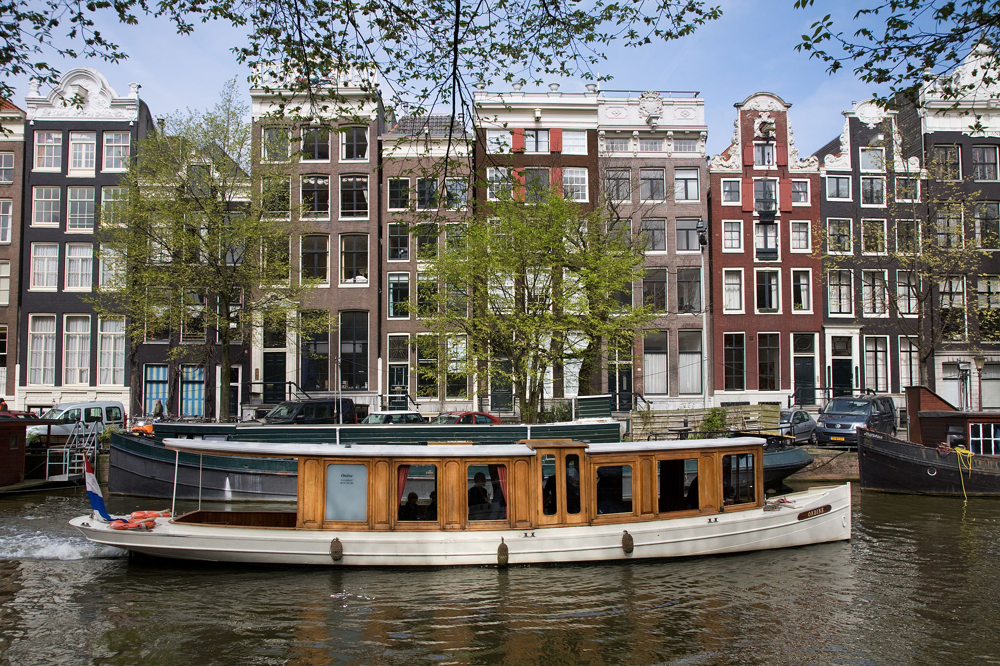
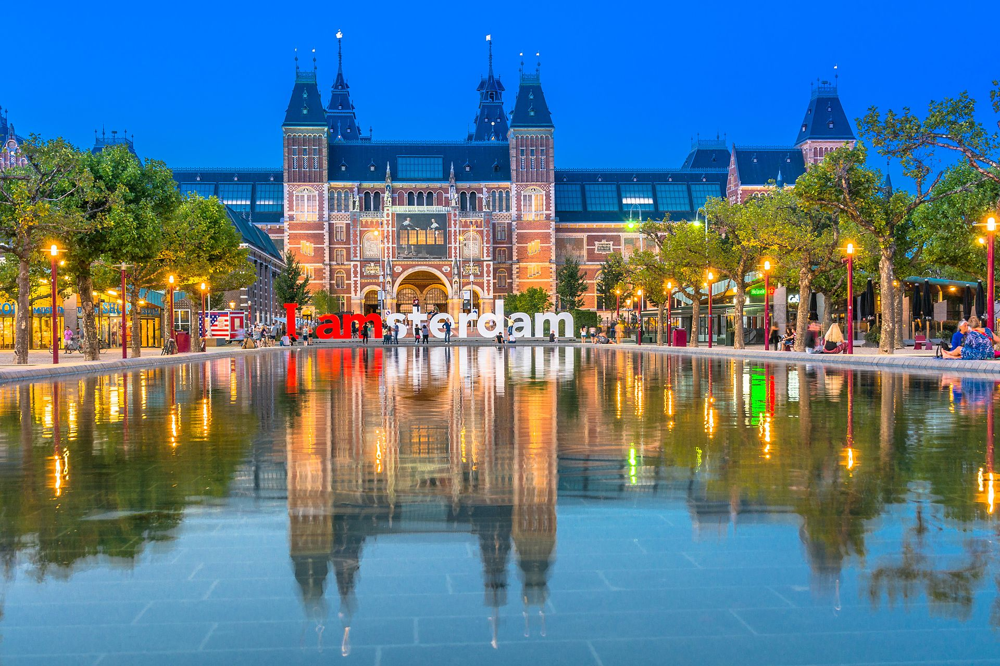

Amsterdam
Amsterdam, is the capital city and most populous municipality of the Netherlands. It's status as the capital is manddated by the Constitution of the Netherlands, although it is not seat of the government, which is The Hague. Amsterdam has a population of 854,047 within the city proper, 1,357,675 in the urban area and 2,410,960 in the metropolitan area.
Main Canal

The city is located in the province of North Holland in the west of the country but is not it's capital, which is Haarelem. The Amsterdam metropolitan area comprises much of the northern part of the Randstad, one of the larger conurbations in Europe, which has a population of approximately 8.1 million.
Originating as a small fishing village in the late 12th century, Amsterdam became one of the most important ports in the world during the Dutch Golden Age (17th century), as a result of its innovative developments in trade. During that time, the city was the leading centre for finance and trade.[17] In the 19th and 20th centuries the city expanded, and many new neighbourhoods and suburbs were planned and built. The 17th-century canals of Amsterdam and the 19–20th century Defence Line of Amsterdam are on the UNESCO World Heritage List. Since the annexation of the municipality of Sloten in 1921 by the municipality of Amsterdam, the oldest historic part of the city lies in Sloten, dating to the 9th century.
Read More about the History
As the commercial capital of the Netherlands and one of the top financial centres in Europe, Amsterdam is considered an alpha- world city by the Globalization and World Cities (GaWC) study group. The city is also the cultural capital of the Netherlands. Many large Dutch institutions have their headquarters there, including Philips, AkzoNobel, TomTom and ING. The city was ranked 4th place globally as top tech hub in the Savills Tech Cities 2019 report (2nd in Europe), and 3rd in innovation by Australian innovation agency 2thinknow in their Innovation Cities Index 2009. The Port of Amsterdam to this day remains the second in the country, and the fifth largest seaport in Europe. Famous Amsterdam residents include the diarist Anne Frank, artists Rembrandt van Rijn and Vincent van Gogh, and philosopher Baruch Spinoza.

What is the City Best Known For?
The Amsterdam Stock Exchange, the oldest stock exchange in the world, is located in the city centre. Amsterdam's main attractions include its historic canals, the Rijksmuseum, the Van Gogh Museum, the Stedelijk Museum, Hermitage Amsterdam, the Anne Frank House, the Scheepvaartmuseum, the Amsterdam Museum, the Heineken Experience, the Royal Palace of Amsterdam, Natura Artis Magistra, Hortus Botanicus Amsterdam, NEMO, the red-light district and many cannabis coffee shops. They draw more than 5 million international visitors annually. The city is also well known for its nightlife and festival activity; several of its nightclubs (Melkweg, Paradiso) are among the world's most famous. It is also one of the world's most multicultural cities, with at least 177 nationalities represented